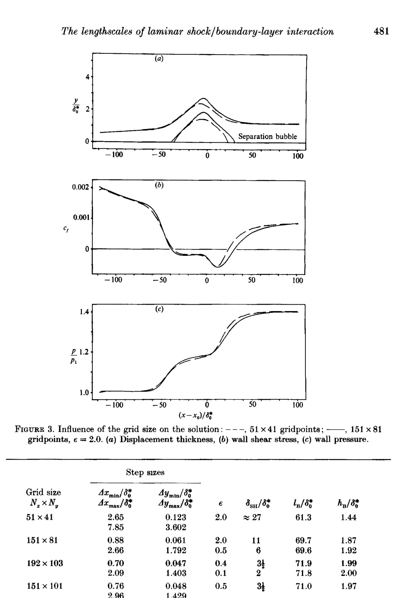
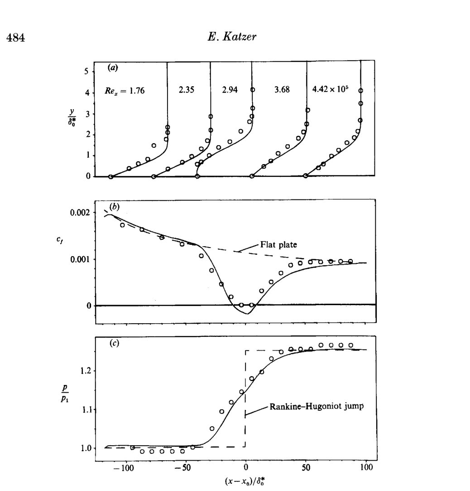
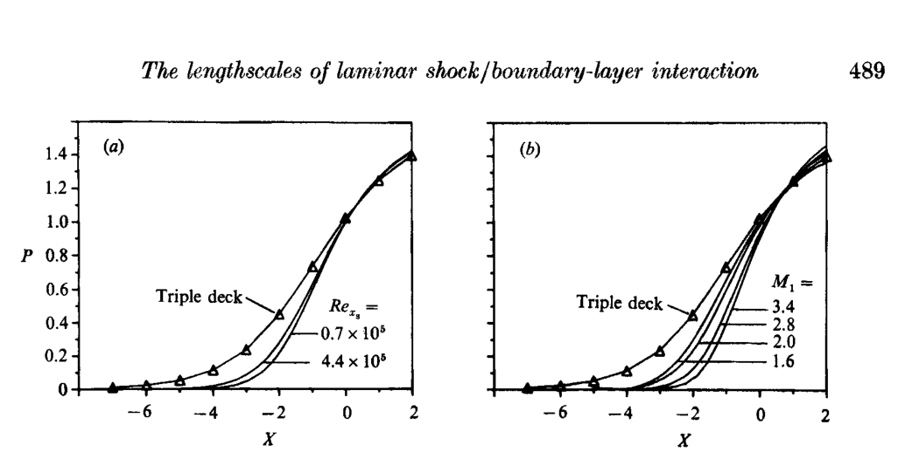
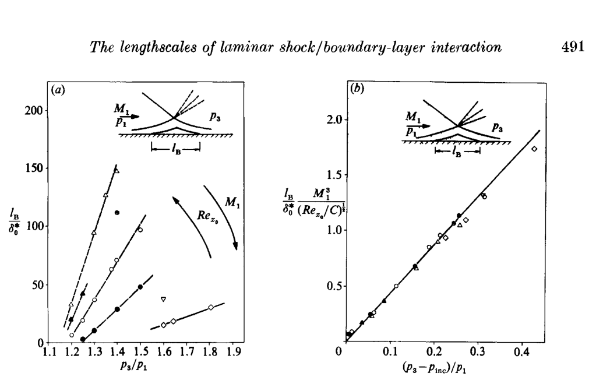

01中文摘要
数值求解Navier-Stokes方程，分析斜激波与绝热平板层流边界层的干扰。马赫数1.4～3.4，雷诺数10⁵～6×10⁵；计算结果与实验吻合良好。提出用边界层边缘压力分布作为数值分辨率的敏感判据，讨论干扰区的局部与整体特性。在分离点附近证实自由干扰的局部标度律；对分离泡长度提出新的相似律，显示激波强度呈线性影响。与三层理论比较发现，有限雷诺数下三层理论明显高估干扰长度，且偏差随马赫数增大、随雷诺数减小而增大；数值结果支持三层理论关于边界层主体位移的模型。分离泡内的非对称结构造成壁面剪应力的特征分布。
原始摘要（英文/原文）
The interaction of an oblique shock with a laminar boundary layer on an adiabatic flat plate is analysed by solving the Navier-Stokes equations numerically. Mach numbers range from 1.4 to 3.4 and Reynolds numbers range from 10 5 to 6 × 10 5. The numerical results agree well with experiments. The pressure distribution at the edge of the boundary layer is proposed as a sensitive indicator of the numerical resolution. Local and global properties of the interaction region are discussed. In the vicinity of the separation point, local scaling laws of the free interaction are confirmed. For the length of the separation bubble a new similarity law reveals a linear influence of the shock strength. A comparison with the triple-deck theory shows that, for finite Reynolds numbers, the triple deck tends to overestimate the lengthscale substantially and that this discrepancy increases with increasing Mach number. The triple-deck model of displacing the main part of the boundary layer is substantiated by the numerical results. An asymmetrical structure within the separation bubble causes a characteristic distribution of the wall shear stress.
02阅读说明
类型：数值模拟（二维层流Navier–Stokes）。材料范围：bundle全文1016行（PDF共20页）已读到EOF；抓图清单6件。关键式(5)(6)(10)–(20)经原PDF第3、11–14、16页核对（共6页，未超限）；式(14)–(15)的小号上标在扫描中辨识度有限，相关不确定处已在derivation中注明。图件file/n/page均按抓取清单原样使用。 文章类型：期刊
03一句话核心与三句话摘要
二维N–S计算表明：层流SBLI分离泡长度随激波强度线性增长，而自由干扰区长度与激波强度无关。
- 有限Reynolds数下层流激波/边界层干扰的长度尺度缺乏系统标定，三阶理论能否用于真实Re也不清楚。 AI概括
- 作者用显式时间分裂MacCormack格式求解N–S方程，覆盖M∞=1.4–3.4、Re=10⁵–6×10⁵、p₃/p₁=1.2–1.8，并提出分离泡长度的新相似律。 原文明确
- 结果表明自由干扰局部标度成立，但三阶理论显著高估长度尺度，且误差随Mach数增大、随Reynolds数减小。 原文明确
04核心内容清单
| 要点 | 类型 | 重要性 | 原文依据 | 属性 |
|---|---|---|---|---|
| 二维层流N–S求解：显式时间分裂MacCormack有限体积格式，四阶数值耗散ε=0.5，基准非均匀网格151×101。 | 方法 | A | §2，期刊p.480–483（PDF第4–7页）；Table 1；Table 4 | 原文明确 |
| 网格与耗散敏感性：粗网格泡长短12%、高度低23%；192×103再增3%长度与7%高度；边界层边缘压力比壁面压力更适合评估分辨率。 | 数值验证 | A | §2，p.482–483；Table 1；图4 | 原文明确 |
| 与Hakkinen等(1959)实验的壁压、边界层剖面吻合；强激波再附区壁面剪应力差异明显，泡长被高估。 | 实验对比 | A | §3，p.483–484；图5 | 原文明确 |
| 自由干扰压力标度成立：式(10)拟合得P_s=1.4、P_p=2.3，与实验√2、2.33及三阶1.45、2.55同量级。 | 标度律 | A | §4，p.487；式(10)；图8 | 原文明确 |
| 自由干扰区长度l_int与激波强度无关，只由分离点附近局部边界层条件决定。 | 标度律 | A | §4，p.488；图9 | 原文明确 |
| 分离泡长度新相似律：式(18)中(l_B/δ*)(M₁³/(Re_{x0}/C)^{1/2})与(p₃−p_inc)/p₁成线性，斜率4.4。 | 核心结果 | A | §5，p.490；式(18)；图11 | 原文明确 |
| 起始分离阈值：式(16)标度下P_inc=1.85√2；实验为2√2、三阶为1.57√2。 | 标度律 | B | §5，p.490；式(16)–(17) | 原文明确 |
| 三阶理论在有限Re下高估长度：同一三阶长度X_B=12.4对应的N–S泡长小三到五倍，误差随M增大、随Re减小。 | 理论比较 | A | §4–§5，p.489–492；图10；Table 3 | 原文明确 |
| 泡内非对称结构：静止中心偏向下游，再附前壁面剪应力出现第二极小；δ*显著变化而δ**近似不变。 | 流动结构 | B | §3，p.484–486；图7 | 原文明确 |
| 与Burggraf标度比较：K_B=11.4–14.2，压力影响为1.5次方，而本文数值给出线性；在p₃−p_inc=0.14p₁时二者一致。 | 理论比较 | B | §5，p.492；式(19)–(20) | 原文明确 |
05引言：研究问题与领域缺口
研究对象是二维斜激波冲击绝热平板层流边界层（§1，期刊p.477，PDF第1页）。工程背景包括跨声速翼型、超声速进气道、燃气轮机与再入飞行器；早期实验见Ackeret等(1946)与Liepmann(1946)，综述见Stanewsky(1973)等（p.477）。作者指出：分离点附近流动由自由干扰机制控制，与下游激波强度无关；大Re下干扰区呈三阶结构，但有限Re下的长度与压力标度仍缺少系统检验（p.478–479）。本文目标是用N–S数值解分析M∞=1.4–3.4、Re=10⁵–6×10⁵、p₃/p₁=1.2–1.8范围内激波强度、Mach数与Reynolds数对干扰区长度尺度和压力尺度的影响，并检验三阶理论与Burggraf标度（p.479）。【AI概括，依据§1】
06流动条件与几何构型
| 项目 | 数值/描述 | 依据 | 备注 |
|---|---|---|---|
| 几何与流动配置 | 二维斜激波冲击绝热平板层流边界层；入射激波在无粘情况下于x₀处与平板相交，干扰区含分离泡、分离激波与再附激波。 | §1，p.477–478；§2，p.479 | |
| 来流Mach数范围 | M∞=1.4–3.4；基准M∞=2.0。 | 摘要p.477；§4 Table 2，p.487 | |
| Reynolds数范围 | Re_{x0}=10⁵–6×10⁵；基准Re_{x0}=3×10⁵。 | 摘要p.477；§2，p.481 | |
| 激波强度范围 | p₃/p₁=1.2–1.8；基准p₃/p₁=1.4。 | §2，p.481；§4 Table 2，p.487 | |
| 气体与输运性质 | γ=1.4；Pr=0.72；Sutherland常数T_s/T_∞=1/3；Newtonian黏性、Stokes假设、Fourier导热。 | §2，p.479；式(4) | |
| 壁面与边界条件 | 壁面绝热、无滑移，∂p/∂y=0；入口为无扰动平板边界层；远场为激波前无扰动流与激波后Rankine–Hugoniot值；出口零梯度。 | §2，p.480 | |
| 来流温度 | 基准T∞=320 K（T/T₀=0.33）；另做T∞=160 K的对照计算。 | §3，p.483–484 | |
| 基准网格 | 151×101非均匀网格，平板前缘x_LE=−169.1（以δ*_{x0}无量纲化）；另用51×41、151×81、192×103。 | Table 1，p.481；Table 4，p.494 | |
| 数值耗散 | 四阶数值耗散参数ε=0.5；对固定网格将耗散增大4倍对泡长无影响、对泡高影响很小。 | §2，p.483；Table 1 | |
| 收敛与机时 | 以壁压RMS小于阈值判稳；t≈(15–35)l_int/U∞；CRAY-1/S上1–5 h，约12 μs/网格点/时间步。 | §2，p.482；式(9) |
07核心现象与关键参数
| 参数 | 定义 | 数值 | 关系/说明 | 依据 |
|---|---|---|---|---|
| M∞（来流Mach数） | 自由来流Mach数，控制压缩性与自由干扰强度。 | 1.4–3.4；基准2.0 | 摘要p.477；Table 2 | |
| Re_{x0} | 以x₀（无粘入射激波与平板交点）到前缘距离为参考长度的Reynolds数。 | 10⁵–6×10⁵；基准3×10⁵ | §2，p.479；Table 1 | |
| p₃/p₁ | 无粘情况下入射与反射激波的总压比，用作激波强度度量。 | 1.2–1.8；基准1.4 | §4，p.486；Table 2 | |
| δ*_{x0} | x₀处无扰动平板边界层位移厚度，作为长度归一化尺度。 | 文中未给出具体数值（以δ*归一化） | §2，p.479 | |
| C（Chapman–Rubesin常数） | C=(μ_w/μ_∞)(T_∞/T_w)，式(12)。 | 基准工况C=0.86（M=2、T_w=1.68T_∞时） | §4，p.489；式(12) | |
| c_{f1} | 干扰区起点x₁处壁面剪应力系数，式(11)：c_{f1}=0.664/(Re_{x1}/C)^{1/2}。 | 随Re与C变化，文中以式(11)计算 | §4，p.487；式(11) | |
| P_s（分离点压力常数） | 式(10)中分离点压力的自由干扰常数。 | 1.4 | §4，p.487；图8 | |
| P_p（平台压力常数） | 平台压力自由干扰标度中的常数。 | 2.3 | §4，p.487；图8 | |
| P_inc（起始分离常数） | 式(16)中起始分离压力常数，式(17)给出P_inc=1.85√2。 | 1.85√2≈2.62 | §5，p.490；式(16)–(17) | |
| l_B、h_B | 分离泡长度与高度。 | 基准工况l_B/δ*≈71.0、h_B/δ*≈1.97（151×101网格，Table 1） | Table 1，p.481 | |
| X_B（三阶泡长尺度） | 按式(14)无量纲化的三阶理论分离泡长度。 | 12.4（对应无量纲斜坡角3） | §5，p.491；Table 3 | |
| K_B(M₁) | Burggraf标度中的Mach数函数，式(20)。 | 11.4–14.2（本文范围内） | §5，p.492；式(19)–(20) | |
| λ | 三阶无量纲化中的常数。 | 0.332 | §4，p.489；式(14) |
08方法与数据
控制方程为二维守恒型N–S方程、连续方程与能量方程（式(3)，p.479）；完全气体γ=1.4，采用Newtonian黏性、Stokes假设与Sutherland定律（T_s/T_∞=1/3），Fourier导热、Pr=0.72（p.479）。采用矩形非均匀有限体积网格，壁面与激波入射点附近加密；网格间距需满足三阶理论限制Δy≲Re_{x_s}^{-1/2}δ*_{x_s}（式(5)）与Δy≈Re_{x_s}^{-1/4}Δx（式(6)）（p.479）。基准网格151×101（Table 4，p.494），另用51×41、151×81、192×103做网格敏感性（Table 1，p.481）。入口给定无扰动平板边界层，远场给定激波前后Rankine–Hugoniot值，出口零梯度，壁面绝热、无滑移且∂p/∂y=0（p.480）。时间推进采用显式时间分裂MacCormack格式，每两步交换算子顺序，并加四阶数值耗散，ε=0.5（p.480–483）。收敛以壁压RMS小于给定阈值判定，无量纲时间t≈(15–35)l_int/U∞；CRAY-1/S上典型机时1–5 h（p.482）。验证包括网格/耗散敏感性、与Hakkinen等(1959)实验对比，以及三阶无量纲化式(14)–(15)（p.482–490）。【原文明确，§2–§3】
| 项目 | 内容 | 依据 | 备注 |
|---|---|---|---|
| 控制方程 | 二维守恒型N–S方程、连续方程与能量方程，写成任意控制体积分形式（式(3)）。 | §2，p.479 | |
| 热力学与输运模型 | 完全气体γ=1.4；Newtonian应力、Stokes假设；Sutherland黏性（T_s/T_∞=1/3）；Fourier导热、Pr=0.72。 | §2，p.479 | |
| 空间离散 | 矩形非等距网格有限体积；控制函数生成节点分布；壁面与激波入射点加密；基准151×101。 | §2，p.479–480；Appendix A，p.493–494 | |
| 时间推进 | 显式时间分裂MacCormack预测–校正格式，每两步交换算子顺序，四阶数值耗散；时间步受CFL条件限制。 | §2，p.480；Appendix B，p.494–495 | |
| 边界条件 | 入口无扰动平板边界层；远场激波前后Rankine–Hugoniot值；出口零梯度；壁面绝热、无滑移、∂p/∂y=0。 | §2，p.480；式(7) | |
| 收敛判据 | 壁面压力RMS小于阈值；t≈(15–35)l_int/U∞。 | §2，p.482；式(8)–(9) | |
| 网格/耗散敏感性 | 比较51×41、151×81、151×101、192×103及ε=0.1/0.5/2.0；以边界层边缘压力峰值判断分辨率。 | §2，p.482–483；Table 1 | |
| 实验验证 | 与Hakkinen等(1959)的壁面压力、壁面剪应力、边界层剖面比较（M=2、Re≈3×10⁵、p₃/p₁=1.25/1.4）。 | §3，p.483–484；图5 | |
| 标度分析 | 按自由干扰式(10)–(13)、三阶式(14)–(15)、起始分离式(16)–(17)、泡长相似律式(18)、Burggraf式(19)–(20)整理数据。 | §4–§5，p.487–492 | |
| 流场结构提取 | 壁面剪应力、位移厚度δ*、动量厚度δ**、流线与泡内静止区；泡长/高度由壁面剪应力零点与流线确定。 | §3，p.484–486；图7 |
09核心推导与公式
用自由干扰标度把分离点压力、平台压力与起始分离激波强度写成局部边界层参数（c_f1、δ*、C）的函数；再由数值数据回归分离泡长度对Mach数、Reynolds数与激波强度的标度，并与三阶理论及Burggraf渐近标度对比。
关键假设
- 二维、定常、层流、绝热平板；完全气体、Newtonian黏性、Stokes假设、Fourier导热、常Prandtl数。
- 自由干扰：分离点附近流动只由局部边界层条件决定，与下游激波强度无关。
- 用无粘激波反射总压比p₃/p₁度量激波强度，忽略上游弱干扰。
- 三阶理论按Re→∞渐近展开；本文Re有限，仅用于对比。
- 泡长以x₀处无扰动位移厚度δ*_{x0}归一化；与Burggraf比较时把平台区长度等同于分离泡长度。
推导过程
把分离点压力系数写成局部壁面剪应力与Mach数的函数：c_{p_s}=(2/(γM₁²))(p_s−p₁)/p₁=P_s[c_{f1}/(M₁²−1)^{1/2}]^{1/2}。P_s为待定常数，由数值结果拟合。
干扰区起点x₁按平板层流关系给出c_{f1}=0.664/(Re_{x1}/C)^{1/2}，其中C=(μ_w/μ_∞)(T_∞/T_w)为Chapman–Rubesin常数，用于把可压缩边界层映射到不可压参考状态。
分离点x_s处的无扰动位移厚度用局部Reynolds数与Mach数表示，作为自由干扰长度与泡长的当地参考尺度。
将壁面压力与流向坐标写成三阶变量：X为按分离点局部尺度归一化的流向坐标，P为按γM₁²p₁归一化的压力；λ=0.332。式(14)–(15)中λ与(T_w/T_∞)项均为小号上标，扫描辨识度有限，此处按可辨字形转录，精确指数形式受限于材料，无法完全确认。
把式(10)用于无扰动边界层在入射点x₀的剪应力c_{f0}，得到起始分离所需的压升；P_inc由数值结果确定为1.85√2。
把泡长按δ*_{x0}、M₁³与(Re_{x0}/C)^{1/2}归一化后，数值数据表明其与超过起始分离阈值的压升(p₃−p_inc)/p₁成线性，斜率4.4；该式即为本文提出的全局标度。
Burggraf基于大Re、长平台假设给出平台长度的1.5次方压力标度：左端与式(18)相同的Mach/Re组合，右端为K_B(M₁)乘以压升的1.5次方；K_B由式(20)给出，本文范围内为11.4–14.2。
由基准与扫描算例拟合式(10)得P_s=1.4、P_p=2.3；由式(16)得P_inc=1.85√2；由式(18)得系数4.4。作者明确指出：Mach数指数3是为最佳拟合数值数据而选，未作物理解释；Reynolds数指数−1/2可由泡内压力与摩擦力平衡的量级论证支持。
适用边界：适用区间为1.4≤M∞≤3.4、10⁵≤Re_{x0}≤6×10⁵、1.2≤p₃/p₁≤1.8，且限二维、定常、层流、绝热壁。式(14)–(15)的小号指数在扫描中不完全清晰，受限于材料，无法完全确认。式(18)的Mach数标度为经验拟合，作者未给出物理解释；式(19)的1.5次方与本文线性律的差异被归因于泡长不足以适用大Re渐近理论。
10结果：主要发现与关键证据
网格敏感性：粗网格（51×41）分离泡比细网格短12%、高度低23%；进一步加密到192×103后泡长再增3%、高度再增7%（§2，p.482–483，Table 1）。壁面压力对分辨率不敏感，而边界层边缘压力在激波/膨胀扇处的峰值可敏感反映网格不足；作者建议入射激波宽度应比干扰区尺度小一个量级（p.483）。与Hakkinen等(1959)对比：M=2、Re≈3×10⁵、p₃/p₁=1.25与1.4时壁压和边界层剖面吻合；弱激波壁面剪应力也吻合，强激波再附区差异明显且泡长被高估（§3，p.483–484，图5）。自由干扰标度：式(10)给出c_{p_s}=(2/(γM₁²))(p_s−p₁)/p₁=P_s[c_{f1}/(M₁²−1)^{1/2}]^{1/2}；数值拟合P_s=1.4，平台压力P_p=2.3，与实验√2、2.33及三阶1.45、2.55接近（p.487，图8）。自由干扰长度l_int与激波强度无关，只依赖分离点附近局部条件（p.488，图9）。三阶对比：有限Re下三阶解高估分离点附近长度尺度，Re增大差异减小；Mach数从1.6到3.4差异增大，但各压力曲线在分离点附近几乎交于一点（p.489–490，图10）。泡长：随p₃/p₁增大而增大，存在起始分离阈值p_inc；由式(16)标度得P_inc=1.85√2（式(17)），与实验2√2、三阶1.57√2比较（p.490）。新相似律式(18)：(l_B/δ*)(M₁³/(Re_{x0}/C)^{1/2})=4.4(p₃−p_inc)/p₁，全部数据坍缩，泡长对激波强度线性（p.490，图11）。与三阶泡长X_B=12.4相比，按式(14)换算的N–S泡长小三到五倍（Table 3，p.491–492）。与Burggraf式(19)–(20)比较：K_B在11.4–14.2，压力指数为1.5而非本文的1.0；当(p₃−p_inc)=0.14p₁时两式给出相同长度（p.492）。分离泡内部：外轮廓近似对称三角形，但泡内静止中心偏向右侧，导致再附前壁面剪应力出现第二极小；位移厚度显著变化而动量厚度近似不变（§3，p.484–486，图7）。【原文明确，除标注外】
| 发现 | 证据 | 证据类型 | 强度 | 位置 | 属性 |
|---|---|---|---|---|---|
| 分离泡长度对激波强度呈线性增长，并遵循式(18)的新相似律。 | 图11(b)中所有M、Re数据在(l_B/δ*)(M₁³/(Re_{x0}/C)^{1/2})对(p₃−p_inc)/p₁坐标内落在斜率4.4的直线上。 | 定量规律 | 强 | §5，期刊p.490；式(18)；图11 | 原文明确 |
| 自由干扰区长度与激波强度无关，只由分离点附近局部流动条件决定。 | 图9中l_int/δ*_{x_s}在不同p₃/p₁下近似水平，作者据此确认自由干扰性质。 | 定量规律 | 强 | §4，p.488；图9 | 原文明确 |
| 自由干扰压力标度成立：分离点压力常数P_s=1.4、平台压力常数P_p=2.3。 | 图8数据按式(10)整理后坍缩；与实验√2、2.33及三阶1.45、2.55比较。 | 定量规律 | 中 | §4，p.487；式(10)；图8 | 原文明确 |
| 三阶理论在有限Re下显著高估长度尺度。 | 同一三阶泡长X_B=12.4对应的N–S泡长小三到五倍（Table 3）；图10壁压曲线显示三阶解更缓。 | 理论比较 | 强 | §4–§5，p.489–492；图10；Table 3 | 原文明确 |
| 三阶与N–S的长度差异随Mach数增大而增大、随Reynolds数增大而减小。 | 图10(a)不同Re、图10(b)不同M的壁压曲线分离程度；Table 3中M=1.4与3.4的换算长度。 | 趋势 | 中 | §4–§5，p.489–492 | 原文明确 |
| 边界层边缘压力比壁面压力更适合作为数值分辨率指标。 | 粗网格下壁压曲线几乎重合，但边缘压力在激波/膨胀扇处的峰值被抹平；Table 1给出不同网格的激波宽度。 | 数值方法 | 强 | §2，p.483；图4；Table 1 | 原文明确 |
| 网格加密主要改变分离泡尺寸而非壁面压力分布。 | 粗网格泡长比细网格短12%、高度低23%；192×103网格泡长再增3%、高度再增7%。 | 数值验证 | 强 | §2，p.482–483；Table 1 | 原文明确 |
| 泡内非对称结构导致再附前壁面剪应力出现第二极小。 | 图7流线显示静止中心偏向下游；壁面剪应力曲线在再附前出现第二极小；δ*显著变化而δ**近似不变。 | 流动结构 | 中 | §3，p.484–486；图7 | 原文明确 |
| 与Hakkinen等实验总体吻合，但强激波再附区剪应力差异明显且泡长被高估。 | M=2、Re≈3×10⁵、p₃/p₁=1.25/1.4的壁压与边界层剖面吻合；p₃/p₁=1.4时再附区剪应力偏离，泡长大于实验。 | 实验对比 | 中 | §3，p.483–484；图5 | 原文明确 |
11机制解释与论证链
自由干扰机制【原文明确】：边界层因初始扰动增厚，使超声速外流被偏转并产生压缩，压缩又使边界层进一步增厚，直至摩擦作用平衡，形成自诱导的分离点附近干扰区；因此分离点压力只依赖局部c_f1与M₁，与下游激波强度无关（p.478，p.487–488）。被动位移图像【原文明确】：泡内慢速回流把上方主流整体抬离壁面，穿过干扰区时流线间距无显著变化，δ*显著增大而δ**近似不变，对应三阶理论中middle deck被lower deck位移的图像（p.486）。全局与局部两种机制【原文明确】：局部机制控制分离点附近的自由干扰长度，全局机制控制整个分离泡长度；作者用沿泡压力与摩擦力平衡的量级关系解释泡长的Re^{1/2}标度（p.490，p.492–493）。非对称结构【原文明确】：泡内静止中心偏向下游，使壁面剪应力在再附前出现第二极小（p.484–485）。
12讨论：结论、贡献与局限
作者把干扰区分为两种机制：全局机制决定分离泡长度，局部机制决定分离点附近的自由干扰区（§6，p.492–493）。三阶理论的压力标度得到证实，但长度标度在有限Re下不成立：三阶高估泡长与自由干扰长度，且误差随M增大、随Re减小（p.489–492）。数值结果支持三阶“主流被动位移”图像：穿过干扰区时流线间距无显著扰动，边界层被泡内慢流整体抬升，δ*变化大而δ**近似不变（p.486）。作者也承认局限：仅层流、二维、绝热壁；Mach数标度纯属数据拟合、缺乏物理解释；壁温与Mach数在绝热条件下耦合，无法分离二者影响；所研究泡长不足以适用大Re渐近理论（p.490，p.493）。未来工作建议分析壁温影响、开展极大分离泡计算并解释长度尺度机制（p.493）。【AI概括，依据§5–§6】
作者结论
在M∞=1.4–3.4、Re_{x0}=10⁵–6×10⁵、p₃/p₁=1.2–1.8范围内，二维层流N–S计算表明：(1) 自由干扰局部标度成立，分离点压力与平台压力分别由P_s=1.4、P_p=2.3描述；(2) 自由干扰区长度与激波强度无关，只由局部边界层条件决定；(3) 分离泡长度遵循式(18)的新相似律，对激波强度线性、对M₁³与Re_{x0}^{−1/2}成比例；(4) 起始分离阈值P_inc=1.85√2；(5) 三阶理论能给出正确压力标度，但在有限Re下高估长度尺度，误差随M增大、随Re减小；(6) 泡内存在非对称结构，造成再附前剪应力第二极小。上述结果为层流SBLI提供可用标度与验证基准，同时界定了三阶理论的使用边界。【原文明确，§6，p.492–493】
主要贡献
- 提出分离泡长度的新相似律式(18)，把激波强度的线性影响与Mach数、Reynolds数标度统一到同一坍缩关系。
- 定量标定自由干扰常数P_s、P_p与起始分离常数P_inc，并与实验及三阶理论逐项比较。
- 系统评估三阶理论在有限Re下对长度尺度的误差，给出误差随Mach数与Reynolds数的变化趋势。
- 提出以边界层边缘压力峰值作为数值分辨率指标，并给出网格与数值耗散敏感性数据。
- 揭示分离泡内部非对称结构及其对壁面剪应力第二极小的影响。
局限与未解决问题
作者明确限定：层流、二维、定常、绝热平板；M∞=1.4–3.4、Re_{x0}=10⁵–6×10⁵、p₃/p₁=1.2–1.8；激波相对三阶标度较强但仍属小偏转；Mach数标度为经验拟合、无物理解释；绝热壁使T_w与M耦合，无法分离壁温效应；泡长未大到可适用大Re渐近理论（p.490，p.493）。此外，实验对比仅用Hakkinen等(1959)一个数据集，未做湍流或三维验证；式(14)–(15)的小号指数受扫描辨识限制，精确形式无法完全确认（AI推断/受限于材料）。
13对高速流动与工程的意义
为层流SBLI提供了一套可复用的长度与压力标度：式(18)可直接估算分离泡尺度；P_s、P_p、P_inc可用于校验自由干扰模型；网格与耗散敏感性结果对CFD设置具有直接指导意义；三阶误差的M/Re趋势为判断渐近理论适用性提供依据（AI概括）。对工程而言，结果可用于进气道、翼型等层流区的初步设计与代码验证，但不能直接外推到湍流SBLI或三维构型（AI推断）。
14核心图件




15可引用原文素材
| 原文短句 | 可支持的观点 | 位置 | 使用建议 |
|---|---|---|---|
| “For the length of the separation bubble a new similarity law reveals a linear influence of the shock strength.” | 泡长新相似律与线性激波强度依赖 | 摘要，期刊p.477（PDF第1页） | 作为全文核心结论的原文依据 |
| “its length l_int is independent of the shock strength, instead it depends only on the local flow conditions” | 自由干扰长度与激波强度无关 | §4，p.488（PDF第12页）；图9讨论 | 支撑局部标度结论 |
| “The separation bubble for the coarse grid is 12% smaller and its height is 23% shorter than for the fine grid.” | 网格分辨率对泡尺寸的定量影响 | §2，p.482（PDF第6页） | 数值验证与网格设置依据 |
| “The pressure at the edge of the boundary layer is more appropriate for that purpose.” | 边界层边缘压力作为分辨率指标 | §2，p.483（PDF第7页） | 数值方法建议 |
| “The triple-deck solution tends to overestimate the lengthscale for finite Reynolds numbers.” | 三阶理论在有限Re下高估长度 | §4，p.489（PDF第13页） | 理论比较的核心判断 |
| “the displacement thickness changes considerably in the interaction region, the momentum thickness is almost constant” | 主流被动位移、δ*变而δ**近似不变 | §3，p.486（PDF第10页）；图7 | 支撑三阶位移模型 |
| “An asymmetrical structure within the separation bubble causes a characteristic distribution of the wall shear stress.” | 泡内非对称结构与第二剪应力极小 | 摘要，p.477（PDF第1页） | 流动结构结论 |
| “Increasing the Reynolds number and decreasing the Mach number increases the bubble length.” | 泡长的Re/Mach趋势 | §5，p.490（PDF第14页） | 相似律的定性依据 |
16最终核验
| 核验项 | 结论 |
|---|---|
| 仅基于全文 | 仅使用bundle全文、图注与抓图清单；公式核对读取原PDF第3、11–14、16页，共6页，未超过每篇6页限制；未引用bundle之外的文献或数据。 |
| A 级要点有依据 | A级要点均给出可定位证据：Table 1（p.481）、图5（p.483–484）、式(10)与图8（p.487）、图9（p.488）、式(18)与图11（p.490）、图10与Table 3（p.489–492）。 |
| 属性标注 | three_sentence、core_points、findings均填写attr；IMRaD、mechanism、conclusions中用【原文明确】【AI概括】【AI推断】标注信息来源。 |
| 覆盖范围 | bundle共1016行，已单次读到EOF；覆盖§1–§6、Appendix A–B、20页正文与6件抓图清单。 |
| 无编造 | 未编造页码、图号、公式或数据；图件file/n/page原样取自清单；无法确认处写“受限于材料，无法完全确认”；作者未给出的量（如δ*_{x0}具体值）写“文中未给出具体数值”。 |
需回原文确认
- 式(10)给出的P_s=1.4与实验√2≈1.414、三阶1.45接近，但P_p=2.3略低于实验2.33与三阶2.55，这一差异是有限Re、壁温还是数据拟合区间造成的？
- 分离泡长度线性律式(18)在更大泡长、更高Re下是否仍成立，抑或会过渡到Burggraf的1.5次方标度？
- Mach数指数3被作者明确称为经验拟合；其物理机制是否与绝热壁温随Mach数变化有关？
- 强激波p₃/p₁=1.4时再附区壁面剪应力与Hakkinen实验差异明显，是Stanton探针干扰、来流温度还是二维假设所致？
- 泡内第二剪应力极小是否在湍流SBLI或三维构型中同样存在？
17关联文献
依据标签、板块、构型与作者脉络自动关联，可据此追踪同一问题的前序与后续工作。
18引用格式
选择期刊风格后复制；出处保留原刊名。BibTeX 可直接用于 LaTeX。
引用格式
Katzer, E. 1989 On the lengthscales of laminar shock/boundary-layer interaction. Journal of Fluid Mechanics 206, 477–496. https://doi.org/10.1017/S0022112089002375
PDF上传 PDF 并更新本页
本页缺少全文、摘要或图件时，可在浏览器本地补入 PDF。解析完全在本机完成，不上传网络；完成后会更新本页的 PDF 打开链接、原摘要、IMRaD 机器抽取、关键句与含图页面。复杂的公式语义与中文深度解读仍以原文和既有精读记录为准。
Zotero 笔记摘录
数值求解了NS方程，研究斜激波与绝热平板层流边界层的相互作用 结论：三层结构理论会显著高估相互作用长度，且误差随 Mach 数增大、随 Reynolds 数减小。还发现分离泡内部存在非对称结构，导致壁面剪应力在再附前出现第二个极小值。 分离点压力系数自由干扰标度： 初始分离激波强度： 分离泡长度相似律（提出）： 与Burggraf大分离泡渐进标度比较：